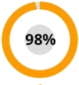

Profesor Erbeznik: "Zakaj leta zdravite sklepe, ko jih je mogoče obnoviti v enem mesecu!"
O prispevku profesorja Erbeznika k zdravljenju sklepnih bolezni in kako s popustom dobiti zdravilo za obnovo sklepov, preberite članek

Leta je raziskovalna skupina pod vodstvom profesorja Erbeznika opravila vrsto laboratorijskih testov inovativnega skupnega zdravila. Rezultati so presegli vsa pričakovanja. Tudi primerjalna analiza zdravila, ki jo je profesor razvil s priljubljenimi farmacevtskimi izdelki, ni pustila dvoma - v revmatologiji prihaja novo obdobje! Raziskovalci so vložili dokumente za registracijo zdravila in vlogo za začetek proizvodnje. Toda takrat se je zgodila nesreča - profesor Erbeznik je zapustil ta svet. Ali zdravilo nikoli ne bo sproščeno? Naš dopisnik je to vprašanje postavil glavnemu revmatologu Ministrstva za zdravje Slovenije Petru Kračinskemu, ki je tudi pomembno sodeloval pri raziskavah zdravil.
Komentar glavnega revmatologa Kračinskega. "Prvi šok po izgubi profesorja je minil. Zavezali smo se, da bomo zadevo njegovega celotnega življenja pripeljali do konca."
Dopisnik: "Pozdravljeni, Petr. Kako gre z razvojem droge danes?"
Kračinski P.: Dober dan, Marco. Z veseljem sporočam, da je bilo po vseh testih pridobljeno dovoljenje za uvedbo zdravila v medicinski sistem. Zdravilo smo poimenovali Artrovex, saj je glavna aktivna sestavina v njem rogovi altajskega marala.
Klinična preskušanja zdravila Artrovex so pokazala njegovo visoko učinkovitost pri zdravljenju sklepov - po najbolj konservativnih ocenah bo to zdravilo vsaj za 10 let podaljšalo povprečno življenje ljudi s sklepnimi boleznimi!
Dopisnik: "Petr, nam lahko poveste, kako se Artrovex razlikuje od običajnih lekarniških izdelkov?"
Kračinski P.:
Nekateri od njih so resnično sposobni lajšati bolečino, vendar večina daje začasen učinek. Izkazalo se je, da sklepa ne zdravijo, ampak le zaustavijo bolečino, ne da bi vplivali na degenerativne procese. Poleg tega dolgotrajna uporaba takšnih zdravil "zadene" ledvice, jetra in želodec. Izkaže se začaran krog - bolnik je nenehno prisiljen uporabljati zdravilo, ki škodljivo vpliva na telo, da zmanjša bolečino, vzroka te bolečine pa ni mogoče zdraviti. To je kljub dejstvu, da so sklepne bolezni v bistvu izjemno resne bolezni, kar vodi do posledic vse do rakavih tumorjev.Poglejmo, do katerih zapletov lahko pride do bolezni sklepov. Če jemljete najpogostejše bolezni sklepov, potem to:
| Bolezen | Zgodnji zapleti | Zapleti v napredni fazi |
|---|---|---|
| Artritis | Nekroza hrustanca, uničenje sklepov, sinovitis | Popolno uničenje sklepa, sepsa, rak sklepa |
| Artroza | Vnetje hrustanca, strukturne spremembe in propadanje sklepov obstaja nevarnost zastrupitve krvi | Invalidnost (odpoved sklepov), uničenje hrustanca, rak sklepa |
| Osteohondroza | Medvretenčni izrastki, premik medvretenčnega diska, stisnjeni živci | Spinalna kila, motnje centralnega živčnega sistema (centralni živčni sistem), obstaja nevarnost okvare določenih organov, raka hrbtenice |
| Koksartroza | Kostne izrastke, degenerativne spremembe hrustanca in sklepov, degenerativne spremembe v artikularnih vrečah | Omejevanje motorične aktivnosti (invalidnost 1 ali 2 skupine), rakavi tumorji |
| Osteoporoza | Smrt vezivnega tkiva, nekroza kosti (povečuje krhkost kosti) | Deformacija posameznih kosti in skeleta kot celote, odpoved okončin, obstaja tveganje za razvoj raka zaradi nekroze kosti |
| Bursitis | Vnetje periartikularne sinovialne vrečke, kopičenje gnojnega eksudata | Zastrupitev s krvjo, odpoved sklepov, gnilobe mišičnega tkiva, maligni tumorji |
| Protin | Vnetje stopalnega sklepa, odlaganje soli, koncentracija v kostnem tkivu urinskih kristalov | Tvorba kosti na nogi in njeno širjenje, sprememba velikosti sklepa, nekroza kostnega tkiva stopala, pojav benignih tumorjev |
Kot lahko vidite, bolezni sklepov pravzaprav zelo pogosto vodijo do resnih zapletov, ki lahko privedejo do invalidnosti ali smrti bolnika. V zadnjih 100 letih obremenitev človeškega okostja nenehno raste. Posledično ima skoraj vsak človek, star 25 let, vsaj 1-2 prizadetih sklepov. Do starosti 35-40 let so bolezni že dolgo prešle v fazo, ko je možen razvoj hudih zapletov.
Za vizualno ponazoritev si lahko ogledate te fotografije, posnete v bolnišnicah:
1. Kolenski sklep osebe z artrozo, ki je bila zdravljena s "klasičnimi" metodami. Injekcije so mu nekaj časa dajale priložnost, da ni čutil bolečine. Vendar niso ovirali razvoja bolezni. Rezultat je bila amputacija noge. Oseba je bila za vedno onesposobljena.

2. Posledice osteohondroze, ki v bistvu tudi ni ozdravela, samo anestezirajo. Skupaj sta bila dva rakava tumorja, v katera se je prelevila kila. Bolnika so poskušali rešiti z operacijo, a žal to ni pomagalo, ženska je umrla.

3. Posledice artritisa roke. Kot sami razumete, je v takšnih razmerah že nemogoče storiti nekaj, ko se je vnetni proces že začel in sepsa začela. Amputirana je bila roka in del roke. A to ga ni rešilo, sepsa se je že razširila na preostali del telesa, moški pa je po šestih mesecih intenzivnega zdravljenja umrl.

In zdaj vrnimo pogovor v pozitivno smer. Profesor Erbeznik je desetletja vzporedno z medicinskimi raziskavami preučeval alternativno medicino, zlasti sibirske skrivnosti dolgoživosti in zdravja. Vse profesorjevo znanje in raziskovalne izkušnje raziskovalnih inštitutov smo združili v naši drogi - Artrovex. Izkazalo se je, da naravne sestavine in izvlečki, ki jih vsebuje Artrovex, zagotavljajo KLJUČNI FAKTOR zdravljenja - popolno dotok krvi v prizadeti sklep. Morate samo zagotoviti obnovitev oskrbe s krvjo, da zaustavite nekrozo in vnetje, hkrati pa začnete proces regeneracije. Težava je v tem, da se sliši enostavno, a v praksi še ni bila pridobljena nobena od obstoječih možnosti zdravljenja. Zdaj takšno zdravilo obstaja in se po zaključku kliničnih preskušanj s popustom distribuira v okviru posebnega programa.
Pred izbiro zdravila za distribucijo v okviru programa so bila izvedena obsežna klinična preskušanja. Skupaj se jih je udeležilo 10 120 ljudi iz različnih starostnih skupin in z različnimi boleznimi sklepov. 93,8% je v celoti pozdravilo svoje bolezni. 5,6% je imelo še nekaj težav, a na splošno se je njihovo stanje bistveno izboljšalo. Če bi kdo imel hudo obliko artritisa in je težko hodil, je imel po končanem tečaju le občasne rahle bolečine v sklepu. In le pri 0,6 je bilo izboljšanje sicer pomembno, vendar nezadostno, da bi jih pripisalo popolni okrevi.
Dopisnik: "Slišal sem prav? Ali resnično čudežno zdravilo resnično distribuirate s popustom?"
Kračinski P.: Da, to je res. V spomin na profesorja Erbeznike smo organizirali sklad, imenovan po njem, prejeli državno financiranje in sprožili skupni program zdravljenja. Program je od države namenil 324 milijonov, 27 milijonov pa iz komercialnih skladov Raziskovalnega inštituta za revmatologijo. Zato imamo možnost distribucije Artrovex s popustom. In ja - resnično deluje. Osebno sem nadziral klinična preskušanja in lahko vam potrdim, da je zdravilo izredno učinkovito.

Želim pokazati rezultate kliničnih preskušanj zdravila Artrovex. Prijetno so presenetili številne zdravnike. Za tiste bolnike, ki jih sklepi pogosto bolijo, bo resnično odrešenje:

Bolečina je v kratkem času izginila pri 100% udeležencev študije
Obnova hrustanca po Artrovexu - pri 98% udeležencev študije

93% udeležencev študije se je po končanem tečaju znebilo artritisa in artroze
To so slike sklepov "pred" in "po" uporabi zdravila "Artrovex"
Dopisnik: "Impresivno. Samo razložite nam, kaj to pomeni za navadne ljudi s sklepnimi boleznimi?"
Kračinski P.: To pomeni, da je sodobna medicina naredila velik preboj, svoje bolezni pa lahko pozdravijo doma v enem do dveh mesecih. Artrovex ne zmrzne, ne anestezira, telo "ponovno zažene" na celični ravni. Odpravlja vzrok za bolečino in vrača sklepe, hrbtenico v prvotno normalno stanje. Pacient se ne le znebi simptomov, temveč odstrani korenino bolezni - oslabljena zaradi počasnih, starih celic, dovajanja krvi v hrustanec.
Artrovex prvi dan zažene sisteme za regeneracijo telesa. No, sindrom bolečine ustavi, takoj ga boste začutili. Po 1,5 meseca bo zdravljenje končano.
Dopisnik: "Artrovex pomaga le pri kakšnih posebnih boleznih?"
Kračinski P.: Ne, pravim vam: deluje na celični ravni in obnavlja oskrbo s krvjo. Zdravi vsako bolezen, povezano s sklepi in hrbtenico: artroza in artritis, osteoporoza, revmatizem, protin in išias, radikulitis in osteohondroza, premik vretenčnih diskov. Kakršne koli bolezni sklepov v kateri koli fazi.
Dopisnik: "In kaj, zdravilo res lajša vse te bolezni in ne samo odpravlja bolečine?"
Kračinski P.: Artrovex in odpravlja bolečine v sklepih (v začetnih fazah zdravljenja) ter bolezen popolnoma odpravi. Seveda obstajajo tudi druge možnosti zdravljenja bolezni, vendar so praviloma vse povezane s kirurškim posegom in so zelo nevarne za človeka. Da ne omenjam dejstva, da stroški operacije na istem kolenskem sklepu zdaj samo prevračajo in si lahko privoščijo zelo majhno število ljudi.

To potrdilo
Dopisnik: "Kako lahko ljudje dobijo Artrovex prek programa s popustom? Ali lahko to počne kdo?"
Kračinski P.: Ja, absolutno kakršen koli. Obstaja le eno "vendar" - program zaradi majhnih količin proizvodnje deluje selektivno. Vsi, ki potrebujejo, lahko ob naročilu tečaja s popustom dobijo Artrovex. Vse, kar je potrebno, je, da navedete svoje ime in telefonsko številko, po kateri vas lahko kontaktirajo zaposleni v svetovalnem centru programa.
Dopisnik: "V kakšnem obdobju bo program deloval?"
Kračinski P.: Program se izteče - (vključno). Do tega datuma morate pustiti zahtevo za Artrovex. Če tega še niste storili, vam svetujem, da pohitite, saj bo potem drogo s popustom mogoče dobiti. Osebno zagotavljam, da bodo vse vloge, oddane pred tem časom, obdelane in ljudje bodo prejeli sredstva.
Petr, hvala za intervju! Mogoče želite našim bralcem kaj povedati, preden se poslovimo? "
Kračinski P.: Ja, seveda. Rad bi opozoril bralce, da se bolezni hrbta in sklepov postajajo mlajše, celo blage periodične bolečine so priložnost, da opozorim na težavo. Zdravnik vas ne bo prepričal v zdravljenje. Kot pravijo, je odrešenje utopljencev delo samih utopljencev.
In zapomnite si: bolezni, ki jih povzročajo bolečine v hrbtu in sklepih, ne prinašajo samo nelagodja. Skrajšajo življenjsko dobo za 15-20 let.
Pazite na ponaredke! Izvirni program "Artrovex" je na voljo izključno na URADNI STRANI

Spomnimo vas, da program velja samo do vključno.
Vam je članek všeč? Delite s prijatelji!


Lep pozdrav, Kračinski P.


Lep pozdrav, Kračinski P.
Lep pozdrav, Kračinski P.


Odlični so pogoji, pohitite!
Kupil sem ga na uradni spletni strani, zelo hitro so me poklicali in naročilo potrdili. Želim končno iti brez bolečin v hrbtu in uživati v pohodništvu)


Lep pozdrav, Kračinski P.


Lep pozdrav, Kračinski P.


In bodite pozorni na ponaredke, prosim.
Lep pozdrav, Kračinski P.

Začelo se je s preverjanjem zlorabe zdravja

G. Celarc: "Kot novi direktor lekarniške verige 36.6 obljubim, da bomo delali pošteno"

Bolniku z artritisom so mu morali amputirati nogo

100.244 ljudi je izgubilo prste zaradi vnetih sklepov

Kakšna je zapletenost operacije kolena